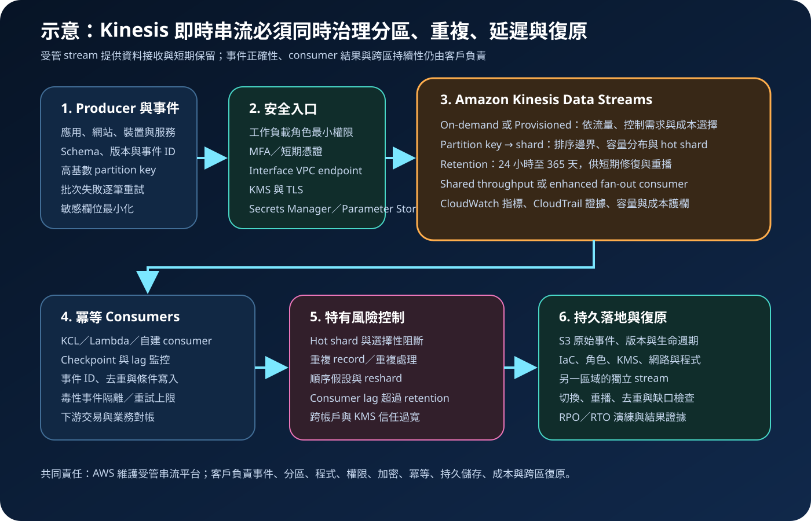

Amazon Kinesis Data Streams：即時串流、分片設計與安全治理
Amazon Kinesis Data Streams 是用來持續接收並暫存即時資料記錄的受管串流服務。它讓多個 consumer 能分別處理同一資料流，但不會代替事件格式治理、partition key 設計、冪等去重、下游交易一致性、跨區複寫或災難復原。
作者：Dr. William｜查閱與發布：2026-10-02
服務定位
Amazon Kinesis Data Streams 適合把應用事件、點擊流、裝置遙測、交易狀態、基礎設施事件與其他持續產生的資料，在低延遲下送入一條可由多個應用程式獨立讀取的資料流。Producer 將 record 寫入 stream；服務依 partition key 或服務管理的分配策略把 record 放入 shard；consumer 再透過 GetRecords、enhanced fan-out、Kinesis Client Library（KCL）、AWS Lambda 或其他整合讀取。
它不是永久資料倉儲、任意查詢資料庫或自動完成業務交易的平台。Record 只在設定的 retention period 內可讀；consumer 必須自行驗證內容、處理重試與重複、保存 checkpoint、寫入持久層，並對失敗、延遲、流量偏斜與下游不可用建立處理程序。
核心概念與適用邊界
資料、分片與順序
- Stream 與 record：stream 是 record 的有序集合；record 包含資料、partition key 與服務指派的 sequence number。
- Shard：shard 是容量與平行處理的基本單位。Provisioned 模式由客戶配置 shard；On-demand 模式由服務依流量管理容量。
- Partition key：預設策略會以 partition key 雜湊決定 shard；相同 key 的 record 會進入同一 shard，適合維持相關事件的相對順序，也可能形成 hot shard。
- 服務管理分配：不需要同 key 排序的無狀態工作，可評估讓服務分散 record，降低不均勻 key 造成的容量偏斜。
- Retention：預設保留 24 小時，可調整至最長 365 天；延長保留會增加成本，縮短前要確認所有 consumer 已完成讀取。
Producer、consumer 與處理語意
- Producer：透過 PutRecord、PutRecords、Kinesis Producer Library 或整合服務寫入；批次寫入必須逐筆檢查失敗結果。
- Shared throughput：使用 GetRecords 的 consumer 共用每個 shard 的讀取容量；consumer 增加可能提高延遲與限流。
- Enhanced fan-out：註冊 consumer 可取得專用的每 shard 讀取能力，降低多 consumer 競爭，但會增加相應費用或使用承諾。
- KCL：協助 shard lease、checkpoint、worker 協調與重新平衡；仍要治理其 DynamoDB 狀態表、CloudWatch 指標、版本及 IAM 權限。
- 至少一次處理現實：producer 或 consumer 重試可能產生重複 record 或重複處理；需要事件 ID、冪等寫入、去重與對帳。
適合與不適合的使用情境
適合
- 應用、網站或裝置持續產生事件，需要在秒級或更低延遲下供多個處理器消費。
- 同一資料流要同時驅動即時告警、分析、風險偵測、資料湖落地與營運儀表板。
- 需要在短期保留窗口內重播資料，以修復 consumer 程式或下游暫時中斷。
- 事件可依實體 ID、裝置 ID 或訂單 ID 分區，且團隊能設計流量均勻的 partition key。
- 團隊能管理 schema 版本、容量、consumer lag、checkpoint、冪等、KMS、IAM、監控與復原。
不適合或不能單獨完成
- 需要永久保存、任意條件查詢、關聯查詢或交易鎖定；應另設 S3、資料庫、搜尋或分析儲存。
- 只需把資料可靠送到 S3、Redshift 或 OpenSearch，且不需要自行控制多個 consumer；可比較 Amazon Data Firehose。
- 希望取得全 stream 的單一全域順序。順序邊界與 shard、partition key 及 consumer 實作相關。
- 無法接受重複事件，卻沒有事件 ID、冪等鍵、去重表或下游唯一性控制。
- 把延長 retention 當成完整備份，卻沒有跨區持久副本、重建腳本與復原演練。
示意故事案例：即時訂單風險事件流
以下為示意案例，不代表特定企業或正式部署。 一家電商希望在訂單建立後數秒內完成風險評分、庫存事件分送與營運監控。團隊先定義事件擁有者、schema、事件 ID、敏感欄位、每秒 record 數、尖峰倍率、可接受延遲、重播窗口、RPO／RTO 與月成本上限，再建立專用 Kinesis data stream。由於流量日夜波動且早期難以準確預估，先採 On-demand；partition key 使用經過容量測試的訂單分桶值，而不是可能造成單一熱點的促銷代碼。
Producer 使用工作負載角色與短期憑證，只能對指定 stream 執行必要寫入；事件不包含 credential 或不必要個資，敏感欄位在來源端先最小化。服務端使用指定 KMS key 加密，VPC 內的 producer 與 consumer 經 interface VPC endpoint 存取。三個 consumer 分別執行風險評分、庫存更新與 S3 稽核落地；每筆事件包含不可變事件 ID，各 consumer 以冪等鍵寫入下游。CloudWatch 監控寫入限流、讀取限流、IteratorAgeMilliseconds、錯誤率及 KMS 失敗；CloudTrail 保存管理與資料 API 證據。原始事件同步落地至受版本控制與跨區複寫保護的 S3，另一區域預先建立 IaC、角色、KMS、stream 與 consumer 部署程序，並定期演練切換。

建置與運作流程
- 定義事件契約：記錄事件名稱、擁有者、schema 版本、事件 ID、partition key、敏感欄位、大小上限、保留需求與相容規則。
- 估算流量：量測平均與尖峰 record 數、位元組、key 分布、producer 數、consumer 數、重播量、延遲及成長率。
- 選擇容量模式：不確定或波動流量可評估 On-demand；可預測流量與精細控制可評估 Provisioned；同時確認模式切換限制、配額與成本。
- 設計分配策略：需要同 key 相對順序時使用足夠分散的 partition key；不需要排序的無狀態工作可評估服務管理分配。
- 建立身分邊界：人員使用聯合登入、MFA 與短期憑證；producer、consumer、管理與跨帳戶角色分離並採最小權限。
- 建立私有連線：VPC 工作負載優先使用 Kinesis interface VPC endpoint，限制 endpoint policy、security group、DNS 與 egress。
- 保護資料：移除不必要敏感欄位，啟用 KMS server-side encryption 與 TLS；機密存於 Secrets Manager，一般參數存於 Parameter Store。
- 實作 producer：設定逾時、指數退避、批次大小與失敗逐筆重試；使用穩定事件 ID，避免把 SDK 成功回應等同業務交易完成。
- 實作 consumer：選擇 shared throughput 或 enhanced fan-out；設定 checkpoint、冪等寫入、毒性事件隔離、重試上限與死信處理。
- 設定 retention：依最長修復時間與重播需求保留足夠窗口；原始資料另行落地至持久儲存，不能只依賴 stream retention。
- 建立觀測：監控 IncomingBytes、OutgoingBytes、限流、IteratorAgeMilliseconds、consumer 錯誤、KMS 錯誤、checkpoint 與下游寫入結果。
- 測試故障與復原：演練 hot shard、突發流量、重複 record、consumer 中斷、下游故障、KMS 拒絕、endpoint 中斷及區域切換。
成本、可用性與維運考量
Kinesis Data Streams 的成本取決於容量模式。Provisioned 通常包含 shard-hour、寫入 payload unit、延長 retention、enhanced fan-out consumer-shard hour 與資料擷取等項目；On-demand 依寫入與讀取資料量、stream 或帳戶模式、延長 retention 及其他選項計費。CloudWatch enhanced shard-level metrics、KMS、VPC endpoint、DynamoDB lease table、Lambda、S3、資料傳輸與下游服務也可能產生成本。價格與 On-demand Standard／Advantage 條件會變動，部署前應依區域與官方價格頁重新估算。
降低成本不能只縮短 retention。應先修正過大的 event、低效率序列化、不均勻 partition key、過度重試、無用途的 enhanced fan-out、長時間 consumer lag 與重複下游寫入，再設定預算、標籤、異常告警及容量護欄。Provisioned 若 shard 過少會限流，過多則閒置付費；On-demand 可降低容量規劃負擔，但突發成長、預熱能力、帳戶承諾與模式限制仍須驗證。
Kinesis Data Streams 在 AWS Region 內使用多個 Availability Zone 提供服務韌性，但 stream 是區域資源。服務可用不代表 producer、consumer、KCL lease table、Lambda、KMS、VPC endpoint、DNS、S3 或下游資料庫都可用。區域級復原需要在另一區域建立獨立 stream、KMS、角色、網路與 consumer，並把原始資料持久落地或雙寫／複寫；切換後仍要處理順序、重複、缺口與對帳。
Amazon Kinesis Data Streams 特有資安風險與控制
- Hot shard 與選擇性阻斷：攻擊者或錯誤 producer 可集中使用少數 partition key。監控 key 分布與限流，限制 producer 速率，採高基數分桶或服務管理分配。
- Producer 偽造事件：分離 producer 角色與 stream，限制 kinesis:PutRecord／PutRecords，加入事件來源、schema 與簽章或完整性驗證，拒絕未授權來源。
- Consumer 越權讀取：依用途分離 consumer 角色，只授予指定 stream、consumer ARN、DynamoDB lease table、KMS key 與下游資源權限。
- 跨帳戶 resource policy 過寬：明確指定 principal、action、stream 與 consumer ARN；同時檢查對方 identity policy 及 KMS key policy，避免形成非預期信任。
- KMS 權限或 key 停用：限制 key administrator 與使用者，監控 DisableKey、ScheduleKeyDeletion、StartStreamEncryption／StopStreamEncryption 與存取拒絕。
- 敏感資料長時間滯留：事件只放必要欄位，依法規與修復窗口設定 retention；持久副本採分類、加密、生命週期與刪除控制。
- 重複事件造成重複交易：producer 與 consumer 重試皆可能重複。每筆事件使用穩定 ID，下游採冪等鍵、條件寫入、去重期限與業務對帳。
- 順序假設錯誤：只在明確 partition key 邊界內依賴順序；reshard、平行 consumer 與下游併發須以版本、序號或狀態機處理。
- Consumer lag 掩蓋資料損失：針對 IteratorAgeMilliseconds、checkpoint 停滯、讀取限流與錯誤率告警，確保 retention 大於可接受修復時間。
- 毒性事件與反序列化風險：限制 record 大小與 schema，驗證型別、編碼與內容；隔離無法處理的 record，禁止無上限重試。
- 公開網路與資料外流：VPC 工作負載使用 interface endpoint 與限制性 endpoint policy；限制 egress、DNS、NAT、security group 及下游目的地。
- 日誌洩漏內容：應用日誌不得記錄完整敏感 payload、credential、簽章或識別碼；採遮罩、取樣、存取控制、KMS 與保留政策。
共同責任邊界
AWS 負責 Kinesis Data Streams 受管服務及其底層雲端基礎設施的安全、區域內服務操作與受管容量能力。客戶仍負責資料內容、事件契約、partition key、容量模式、producer 與 consumer 程式、IAM、KMS、網路、checkpoint、重試、冪等、下游儲存、監控、成本及跨區復原。
客戶須落實 IAM 最小權限、管理者 MFA 與工作負載短期憑證、網路隔離、避免不必要公開連線、KMS 加密、Secrets Manager／Parameter Store、CloudTrail／CloudWatch、持久落地、備份與跨區復原。AWS 不會替客戶判斷事件是否含過多個資、partition key 是否形成熱點、consumer 是否重複扣款、checkpoint 是否正確、下游是否完整寫入，或另一區域能否在 RTO 內接手。
上線前可執行檢查清單
- □ 已記錄事件擁有者、schema、事件 ID、partition key、資料分類、保留、RPO／RTO、延遲目標與月成本上限。
- □ 已量測平均與尖峰 records/s、bytes/s、key 分布、consumer 數、重播量與未來成長。
- □ 容量模式、區域、配額、模式切換限制、預熱需求與成本已依官方資料重新確認。
- □ Partition key 具足夠基數且通過 hot shard 測試；不需要順序的工作已評估服務管理分配。
- □ 人員使用聯合登入、MFA 與短期憑證；producer、consumer、管理、跨帳戶與 KMS 權限已分離並最小化。
- □ VPC 內流量經核准 interface endpoint；endpoint policy、security group、DNS、NAT 與 egress 沒有不必要開放。
- □ Stream 使用核准 KMS key 與 TLS；KMS key policy、停用／刪除告警、輪替及復原程序已驗證。
- □ Credential 只存於 Secrets Manager；一般參數存於 Parameter Store；程式、事件、日誌與錯誤輸出均無明文機密。
- □ Producer 已逐筆處理 PutRecords 失敗，具有限制式重試、事件 ID、輸入驗證與流量控制。
- □ Consumer 已設定 checkpoint、冪等寫入、去重、毒性事件隔離、重試上限、死信與對帳。
- □ Shared throughput 或 enhanced fan-out 的選擇有容量與成本依據，KCL 版本、lease table 及 worker 權限已治理。
- □ Retention 大於最長修復時間，且原始事件已落地至受版本、加密、生命週期與備份保護的持久儲存。
- □ CloudWatch 已監控流量、限流、IteratorAgeMilliseconds、consumer、KMS、checkpoint 與下游結果；CloudTrail 已建立持續 trail。
- □ 已測試 hot shard、突發流量、重複 record、consumer 中斷、下游故障、KMS 拒絕、endpoint 中斷與保留到期。
- □ 已在另一區域以 IaC 建立 stream、KMS、角色、網路及 consumer，並驗證切換、重播、去重、缺口與對帳。
AWS 官方一手來源
- What is Amazon Kinesis Data Streams?（查閱：2026-10-02）
- Amazon Kinesis Data Streams terminology and concepts（查閱：2026-10-02）
- Create and manage Kinesis data streams（查閱：2026-10-02）
- Choose the right mode to stream in（查閱：2026-10-02）
- Write data to Amazon Kinesis Data Streams（查閱：2026-10-02）
- Develop enhanced fan-out consumers（查閱：2026-10-02）
- Handle duplicate records（查閱：2026-10-02）
- Change the data retention period（查閱：2026-10-02）
- Data protection in Amazon Kinesis Data Streams（查閱：2026-10-02）
- Use Kinesis Data Streams with interface VPC endpoints（查閱：2026-10-02）
- Security best practices for Kinesis Data Streams（查閱：2026-10-02）
- Monitor Kinesis Data Streams（查閱：2026-10-02）
- Log Kinesis Data Streams API calls with AWS CloudTrail（查閱：2026-10-02）
- Disaster recovery in Amazon Kinesis Data Streams（查閱：2026-10-02）
- Amazon Kinesis Data Streams pricing（查閱：2026-10-02）
- AWS Well-Architected Security Pillar｜Shared responsibility（查閱：2026-10-02）
內容說明
本文依查閱日可用的 AWS 官方文件整理，作為基礎學習與架構討論材料；實際部署仍須依最新容量模式、區域支援、record 大小、配額、價格、KCL／KPL 版本、資料分類、組織政策與復原演練結果調整。